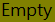

Geometry Attribute Table¶

Description¶
An attribute table window which includes a geometry column for any vector layer.
The geometry column uses the icons shown in the table below to indicate the feature’s geometry type in descending precedence: unknown (null); empty; point; multi-part point; line; multi-part line; polygon; and, multi-part polygon.
| Icon | Geometry |
|---|---|
|  | Empty geometry |
| Unknown geometry | |
 |
Point (single) |
| Multi-Part Point | |
| Line (single) | |
 |
Multi-part Line |
| Polygon (single) | |
 |
Multi-Part Polygon |
Use¶
This tool works on the current active layer. The current layer needs to be a vector layer. This tool will not work on a raster layer.
Click on the vector layer in the Layers Panel then click on the Geometry Attribute Table icon or select
Geometry Attribute Table from the Plugins menu.
Definitions¶
- Geometry
- The shape that is associated with a feature. In many GIS systems the a feature can only have a single geometry type, where the type is constrained to being the same for the entire dataset.
- Dataset
- A table containing features.
- Empty
- It is known that a geometry does not exist within the feature’s domaine. Normally only needed for attribute tables with multiple geometry columns.
- Null
- The geometry is unknown. It may or may not be empty depending on the dataset.